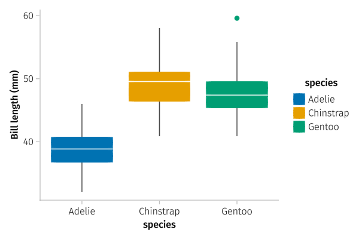
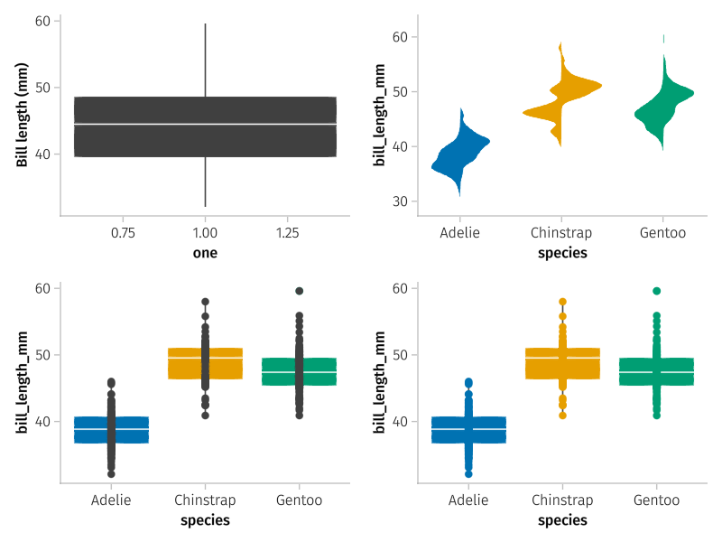
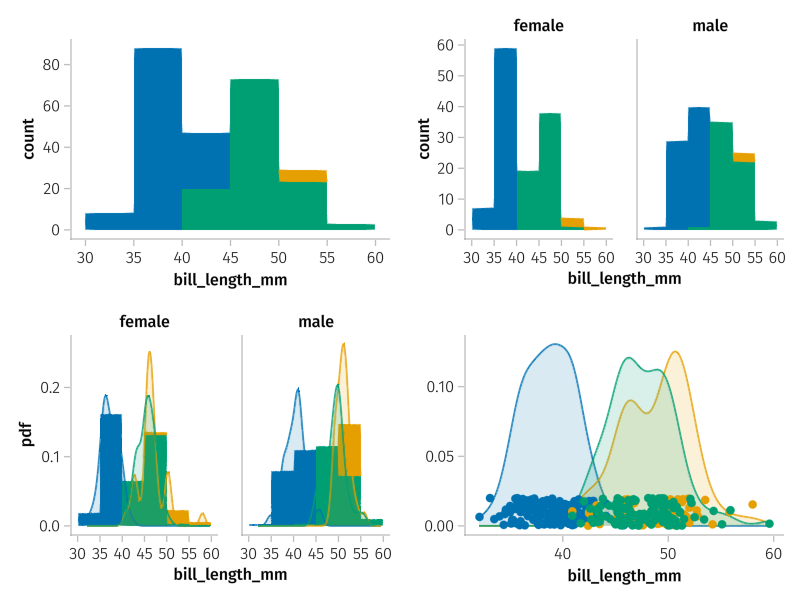
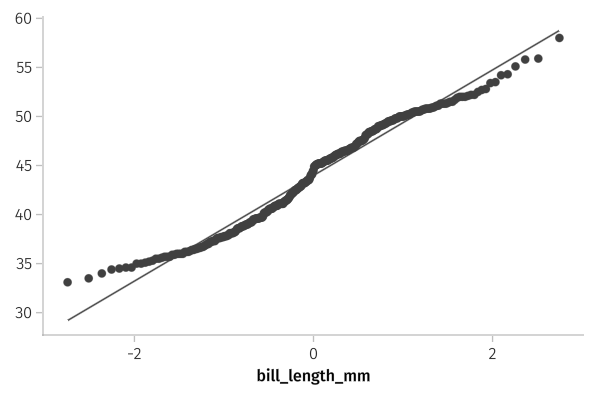
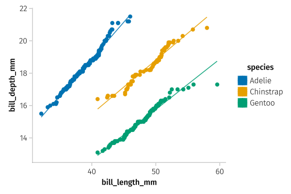
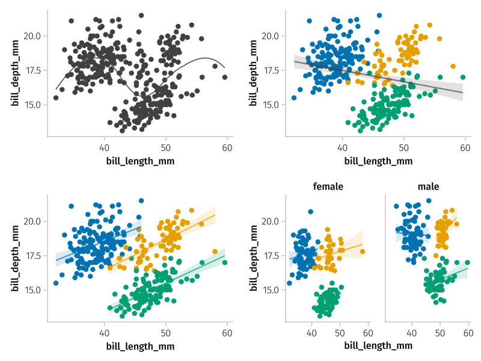
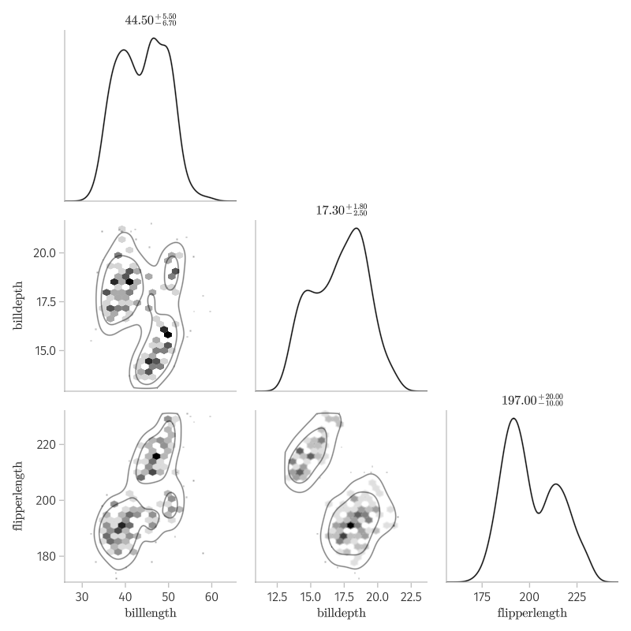
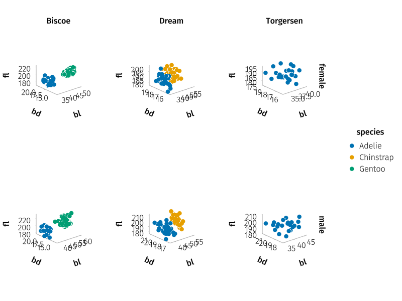
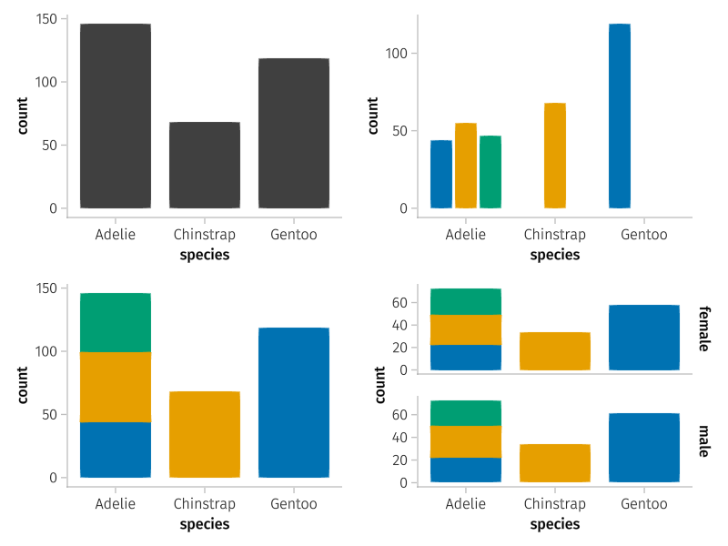

using PalmerPenguins
penguins = dropmissing(DataFrame(PalmerPenguins.load()))
irst(penguins, 3)LoadError: UndefVarError: irst not definedThe StatsPlots package has been used to illustrate the standard graphics of exploratory statistics. That package leverages Plots, a Julia interface to multiple plotting backends. The GR one renders the images seen. There are a few alternatives, and the Makie plotting system along with the AlgebraOfGraphics package makes a very compelling alternative.
The AlgebraOfGraphics packages offers a declarative style to create statistical graphics. An example from the documentation shows the code to do the following “declare the dataset; declare the analysis; declare the arguments used; declare the grouping and the respective visual attribute; draw the visualization.” This is all done through a series of composable commands, illustrated by example below. The Pumas project has a much more extensive tutorial.
We will see that it is very easy to visualize multiple variables through an appropriate choice of graphic, and further choices of coloring, faceting, or other means to demarcate different factors.
We begin by loading the packages. The GLMakie backend is used here, there are alternatives for web-based graphics and Cairo-based graphics.
using StatsBase, DataFrames, RDatasets
using GLMakie, AlgebraOfGraphics
set_aog_theme!()We use the color theme of aog, as declared in the last command. The packages are compute-intensive and can take a while to load.
Following the package tutorial we load the Palmer penguins data set of Allison Horst. This includes data collected and made available by Dr. Kristen Gorman and the Palmer Station, Antarctica LTER, a member of the Long Term Ecological Research Network. The data can be downloaded from the GitHub site, but it is also wrapped into a Julia package:
using PalmerPenguins
penguins = dropmissing(DataFrame(PalmerPenguins.load()))
irst(penguins, 3)LoadError: UndefVarError: irst not definedThis data set has several correlated numeric variables on bill length, bill depth, flipper_length, and body_mass_g; and several categorical variables, such as species, island, and sex. A more complete data set can be downloaded from the GitHub site.
We run through the basic graphics for univariate statistics. We shall see that the framework makes multi-variate display quite direct, and at times easier than a univariate display.
A boxplot (Figure 6.1) for each species is created by composing a series of declarative commands:
p = data(penguins) *
visual(BoxPlot) *
mapping(:species, :bill_length_mm => "Bill length (mm)", color=:species);The data(penguins) command sets up the data. Here a data frame is passed, but this can be any Tables compatible structure, such as a struct of arrays: data( (;species=penguins.species, :bill_length+mm = penguins.bill_length_mm) ).
The visual(BoxPlot) command declares the visualization to be used to view the data. In this case BoxPlot is the type associated with the Makie.boxplot function.
The mapping uses position to identify the x, y, and (at times) z values for the graphic. The y variable uses a mini language nearly identical to the DataFrames mini language (only ByRow is assumed) to rename the variable, for labeling purposes. This could have also been done in the original data, penguins. For a box plot an indicator of the groups goes in the x position. The color=:species uses a mapping between the levels of the :Species variable and color ramp to give each a distinct color. Omitting this will produce a monotone graphic with the chosen theme.
Both mapping and visual can be used to set attributes; visual is used to set attributes for each element independent of the data; mapping is used to have attributes depend on a value of a variable, like color is used above. The attributes for visual are those for the underlying plotting function. For visual(BoxPlot), these can be seen at the help page for boxplot, displayed with the command ?boxplot.
The object p can be rendered to the screen with draw resulting in Figure 6.1. (Just draw(p) will render the graphic, the figure keyword arguments takes a named tuple, in this case the figure size is set. Similarly axis values can be modified in this manner.)
draw(p; figure=(resolution=(600,400),) )
penguins.This is the basic pattern where different choices are combined, or merged, with the * operation. In the following, we make use of a slightly augmented data set, which we call d for reuse:
d = data(select(penguins, :, :bill_length_mm => ones ∘ length => :one));Box plots are very effective for quickly comparing distributions of a numeric variable across the levels of some factor. The calling syntax preferences that style, where both an x and y value are specified to mapping. To create a box plot of a single variable, without grouping, the graphic takes a bit more to construct. In the above we created an artificial variable in d called one. This is used to do a simple graphic (upper left graphic in Figure 6.2):
p1 = d * visual(BoxPlot) *
mapping(:one, :bill_length_mm => "Bill length (mm)");The mini language is used above for labeling, but it too could be used to create a a variable with one value: mapping(:bill_length_mm => one, :bill_length_mm) would also work to create a single boxplot, in this case centered at \(1\).
To add another layer, in this case a scatter plot, we can add the plotting objects:
p2a = d * visual(BoxPlot) * mapping(:species, :bill_length_mm, color=:species)
p2b = d * visual(Scatter) * mapping(:species, :bill_length_mm)
p2 = p2a + p2b;Combinations with + add a layer; those with * merge layers. The algebra name also refers to algebraically desirable short cuts. For example, we repeat d and the mapping for each p2a and p2b, but these can be used just once by distributing them:
m = mapping(:species, :bill_length_mm, color=:species);
p3 = d * ( visual(BoxPlot) + visual(Scatter) ) * m;Both p2 and p3 are shown in the lower row of Figure 6.2. There is just one slight difference, the dots representing the data in p2 are not colored, as the mapping did not instruct that in forming p2b.
Specifying a violin plot requires just a slight modification to the above: we change the BoxPlot visual to Violin. Violin plots have an argument side that allows both sides of the violin to reflect an extra grouping variable. We use :sex, as it has only two levels. With this, each side of the violin plot reflects grouping by the :sex factor, the legend is used to lookup with level of the factor is represented.
p4 = d * visual(Violin) * mapping(:species, :bill_length_mm, color=:species, side=:sex);The visual(Violin) call wraps the function Makie.violin whose documentation contains additional possible arguments beyond side.
The AlgebraOfGraphics package builds in Makie which has a layout system, which leverages matrix notation to specify cell position. The draw! method accepts a figure object as a first argument. In Figure 6.2 we layout 2 rows and 2 columns of figures. It is constructed as follows:
f = Figure()
draw!(f[1,1], p1)
draw!(f[1,2], p4)
draw!(f[2,1], p2)
draw!(f[2,2], p3)
f
The package also supports faceting where different panels share the same scales for each cross comparison. Faceting is specified through the keyword layout or either (or both) of row and col keywords. The layout keyword uses levels of the variable name it is passed and arranges the plots over these levels. The col will make columns for each level of the specified variable, whereas row will create rows for each level of the specified variables.
The AlgebraOfGraphics has certain functions it refers to as transformations of the data. These include histogram, density, frequency, linear, smooth, and expectation; most all will be illustrated by example below.
These are used like visual was above, but arguments are passed directly to the transformation.
The histogram function plays the role of visual in this graphic. (The visual function is still useful to apply data-independent attributes.) Here we arrange to color by species:
p1 = d * histogram() * mapping(:bill_length_mm, color=:species);The histograms overlap. The layout command can be used to declare one panel per level. We do this with :sex:
p2 = d * histogram() * mapping(:bill_length_mm, color=:species, layout=:sex);See Figure 6.3 for the graphics.
The histogram function has options for overriding the default bin selection and has several options for scaling the figure through its normalization argument. We use this in the next graphic which layers a density plot over a scaled histogram using the :pdf scaling. The density transformation is qualified with the module name to prevent a conflict with one in Makie1.
layers = histogram(normalization=:pdf) + AlgebraOfGraphics.density()
p3 = d * layers * mapping(:bill_length_mm, color=:species, layout=:sex);In this next figure we add in a scatter plot of the data on top of the density plots. For the scatter plot, we use the Scatter visual for which we create jittered \(y\) values to disambiguate the data, these are added as a column to the data in d1, below:
p4a = d * AlgebraOfGraphics.density() *
mapping(:bill_length_mm, color=:species)
d1 = data(transform(penguins,
:bill_length_mm => ByRow(x -> 0.02 * rand()) => :ys))
p4b = d1 * visual(Scatter) * mapping(:bill_length_mm, :ys, color=:species)
p4 = p4a + p4b;
The QQNorm and QQPlot visuals are used to make quantile-quantile plots; QQNorm expects a mapping to :x (first position) whereas QQPlot expects mappings to :x and :y (the first two positions).
The following will give a visual check if bill length is normally distributed, which seems to indicate slightly shorter tails than expected
p1 = data(penguins) * visual(QQNorm, qqline=:fit) *
mapping(:bill_length_mm);The following will give a visual check if bill length has a similarly shaped distribution as bill depth, in this case with each species highlighted:
p2 = data(penguins) * visual(QQPlot, qqline=:fit) *
mapping(:bill_length_mm, :bill_depth_mm, color=:species);Both are shown in Figure 6.4.


QQNorm), the right one uses QQPlot to compare the distribution of two variables after grouping by species.Scatterplots with trend lines are easily produced within the AlgebraOfGraphics framework: the Scatter visual creates scatter plots; for trend lines there is the smooth transformation to fit a loess line, and the linear transformation to fit linear models.
This first set of commands shows how to fit a smoother (upper left graphic in Figure 6.5). The smooth function has arguments which pass on to Loess.loess.
layers = visual(Scatter) + smooth()
p1 = d * layers * mapping(:bill_length_mm, :bill_depth_mm);The linear function draws the fitted regression line and shades an interval automatically (the interval argument). Linear prediction under model assumptions provides a means to identify confidence intervals for the mean response (the average value were the covariates held fixed and the response repeatedly samples) and for the predicted response for a single observation. The latter are wider, as single observations have more variability than averages of observations. A value of nothing suppresses this aspect.
This next set of commands shows (upper-right figure of Figure 6.5) one way to add a linear regression line. As the mapping for linear does not include the grouping variable, (color) the line is based on all the data:
d1 = d * mapping(:bill_length_mm, :bill_depth_mm)
p2a = d1 * visual(Scatter) * mapping(color=:species)
p2b = d1 * linear()
p2 = p2a + p2b;Whereas with this next specification, color is mapped for both the linear transformation and the Scatter visual. This groups the data and separate lines are fit to each. We can see (lower-left figure of Figure 6.5) that whereas the entire data shows a negative correlation, the cohorts are all positively correlated, an example of Simpson’s paradox.
layers = visual(Scatter) + linear()
p3 = d1 * layers * mapping(color=:species);Adding layout=:sex shows more clearly (lower-right figure of Figure 6.5) that each group has a regression line fit, that is the multiplicative model is fit.
p4 = d1 * layers * mapping(color=:species, layout=:sex);
A corner plot, as produced by the PairPlots package through its pairplot function, is a quick plot to show pair-wise relations amongst multiple numeric values. The graphic uses the lower part of a grid to show paired scatterplots with, by default, contour lines highlighting the relationship. On the diagonal are univariate density plots.
using PairPlots
nms = names(penguins, 3:5)
p = select(penguins, nms .=> replace.(nms, "_mm" => "", "_" => " ")) # adjust names
pairplot(p)
A 3-d scatter plot of 3 numeric variables can be readily arranged, with just one unexpected trick:
The mapping object should contain an x, y, and z variable specification with numeric variables.
The draw call should include an axis = (type = Axis3,) call, specifying that a 3D (Makie) axis should be used in the display.
d = data(penguins)
p = d * mapping(:bill_length_mm => :bl, :bill_depth_mm => :bd, :flipper_length_mm=>:fl; color=:species,
row=:sex, col=:island)
draw(p, axis=((type=Axis3,)))
The distribution of the surveyed species is not the same. A bar chart can illustrate (upper-left graphic of Figure 6.7). The frequency transform does the counting:
p1 = d * frequency() * mapping(:species);Two categories can be illustrated, we need dodge set here to avoid overplotting of the bars. In this example, following the AlgebraOfGraphics tutorial, we add in information about the island. This shows (upper-right graphic of Figure 6.7) that two species are found on just 1 island, whereas Adelie is found on all three.
p2 = d * frequency() *
mapping(:species, color=:island, dodge=:island);Using stack in place of dodge presents a stacked bar chart (lower-left graphic of Figure 6.7):
p3 = d * frequency() *
mapping(:species, color=:island, stack=:island);A third category can be introduce using layout, col, or row (lower-right graphic of Figure 6.7):
p4 = d * frequency() *
mapping(:species, color=:island, stack=:island) *
mapping(row=:sex);
The Makie density could be accessed through visual(Density) without module qualification. The density function in AlgebraOfGraphics has a nice transparency feature which makes its use desirable.↩︎